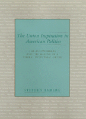

<body bgcolor="#FFFFFF" text="#000000" link="#0000FF" vlink="#CC0000" alink="#CC0000"><center><hr width="350" size="1" align="center" noshade>A sweeping reinterpretation of New Deal liberalism and industrial relations<hr width="350" size="1" align="center" noshade><p><a href="https://cdcshoppingcart.uchicago.edu/Cart/ChicagoBook.aspx?ISBN=9781566391894&&PRESS=temple" target="_top">Buy this book!</a> | <a href="https://cdcshoppingcart.uchicago.edu/Cart/Cart.aspx?PRESS=temple" target="_top">View Cart</a> | <a href="https://cdcshoppingcart.uchicago.edu/Cart/Cart.aspx?PRESS=temple" target="_top">Check Out</a></p><p></p></center><!--none//--><h1>The Union Inspiration in American Politics</h1>
<H2>The Autoworkers and the Making of a Liberal Industrial Order</H2>
<h3>Stephen Amberg</h3>
<P>cloth 1-56639-189-X $79.50, Jun 94, <FONT COLOR=#990033>Out of Stock Unavailable</FONT>
<BR> 368 pp
6x9
2&nbsp;tables
</P><P>The New Deal made organized labor a primary Democratic party coalition partner in national politics. For the next twenty-five years, unions were a part of a virtuous circle of rising wages and benefits, economic growth, steady profits, and consensus on social reform. The AFL CIO was able to influence the outcome of presidential elections and command attention in Congress. Today that world is in ruins. Stephen Amberg analyzes what caused the breakdown.
<P>With the significant changes in the labor force and the international economy in the 1960s, New Deal industrial relations no longer ended conflicts in the factories but blocked new strategies to stay competitive and to sustain the gains won by the working class. This new challenge to Democratic coalition leaders set the stage for a return of free market ideologies and conservative political leaders who said that government and labor were the causes of crisis. The flaw in the criticism was the claim that reform based on managerial self-interest was the only alternative. Instead, this book argues, the alternative path of worker participation could have been followed and could still be followed today.
<P>Amberg's examination of auto industrial relations reveals that Democrats helped create and then undermine the modern labor movement. He traces the auto industry's development from a virtual dictatorship in the 1920s to pluralist democracy in the 1930s and 1940s, with the successful unionization drives of the United Auto Workers Union, to the period of crisis that began in the late 1970s. During this time, the industry was converted from the single largest generator of jobs and wealth, a paradigm of efficiency and consensual labor-management relations, to a symbol of industrial bureaucracy and competitive failure. Firms like Studebaker that originally followed promising but unorthodox market strategies and labor relations vanished into bankruptcy. Workers and their unions were unable to gain political support for participation in decision making about industrial restructuring.
<BR>&nbsp;<h2>Excerpt</h2><P>Excerpt available at <a href="http://www.temple.edu/tempress">www.temple.edu/tempress</a></p>
<BR>&nbsp;<h2>Contents</h2><P>
<p>Preface
<br>List of Abbreviations
<br>Introduction: Liberal Democracy and Industrial Order
<br>1. The New Deal as System and Project
<br>2. Creating a Low-Capacity Industrial Order
<br>3. The Strategic Vision of Unionism
<br>4. Settling for Pluralism
<br>5. Creating a Special Interest Group
<br>6. Boundary Maintenance at Studebaker
<br>7. The Liberal Democratic Reform Cycle
<br>8. Reconfiguring Work and Politics
<br>Notes
<br>Index
</P><BR>&nbsp;<H2>About the Author(s)</H2>
<P><b>Stephen Amberg</b> is Associate Professor of Political Science at the University of Texas at San Antonio.</P>
<BR><H2>Subject Categories</H2>
<p><A HREF="/tempress/political.html" TARGET="_top">Political Science and Public Policy</a>
<BR><A HREF="/tempress/labor.html" TARGET="_top">Labor Studies and Work</a>
</p>
<BR><h2 class="inpageheading">In the series</H2>
<P><I><a href="http://www.temple.edu/tempress/labor_change.html" onMouseOver="window.status='Click for other books in this series!'; return true;" onMouseOut="window.status=''; return true;" target="_top">Labor and Social Change</a></i>, edited by Paula Rayman and Carmen Sirianni.
</p><p><i>Labor and Social Change</i>, edited by Paula Rayman and Carmen Sirianni, includes books on workplace issues like worker participation, quality of work life, shorter hours, technological change, and productivity, as well as union and community organizing and ethnographies of particular occupations.</p>
<p align="center"><a href="https://cdcshoppingcart.uchicago.edu/Cart/ChicagoBook.aspx?ISBN=9781566391894&&PRESS=temple" target="_top">Buy this book!</a> | <a href="https://cdcshoppingcart.uchicago.edu/Cart/Cart.aspx?PRESS=temple" target="_top">View Cart</a> | <a href="https://cdcshoppingcart.uchicago.edu/Cart/Cart.aspx?PRESS=temple" target="_top">Check Out</a></p><p><font face="Arial" size="1"><a href="copyright.html" onMouseOver="window.status='Web Copyright Policy';return true;" onMouseOut="window.status=''" title="Web Copyright Policy">&copy;</a> 2015 <a href="http://www.temple.edu" target="new" onMouseOver="window.status='Link to Temple University home page';return true;" onMouseOut="window.status=''" title="Link to Temple University home page">Temple University</a>. All Rights Reserved. http://www.temple.edu/tempress/titles/1119_reg.html</font></p>